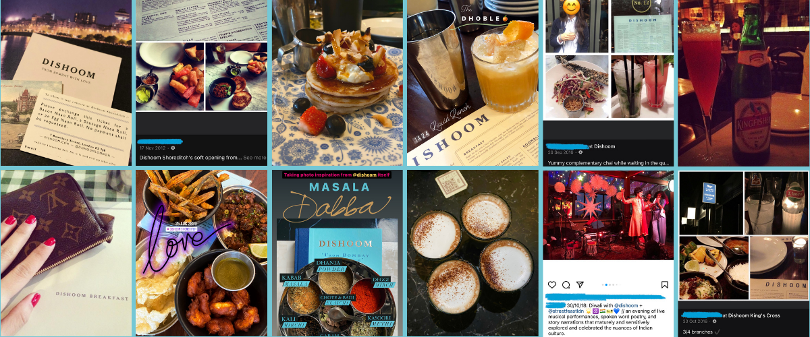
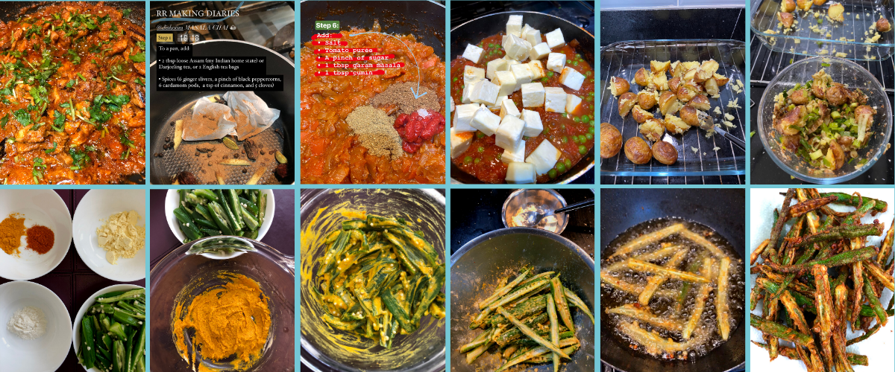
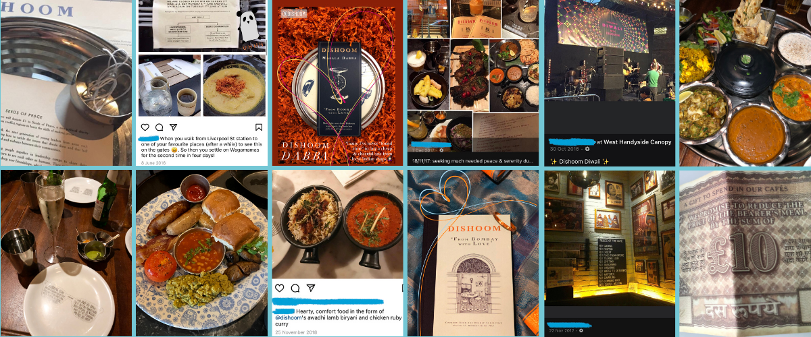
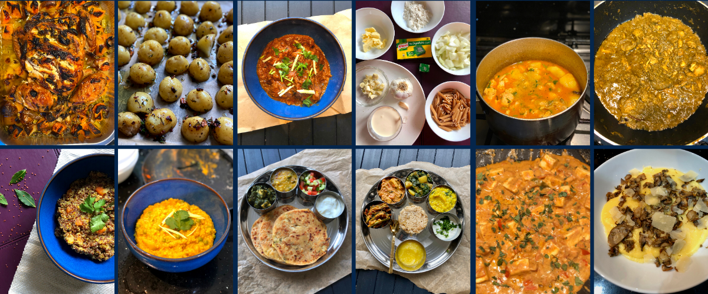
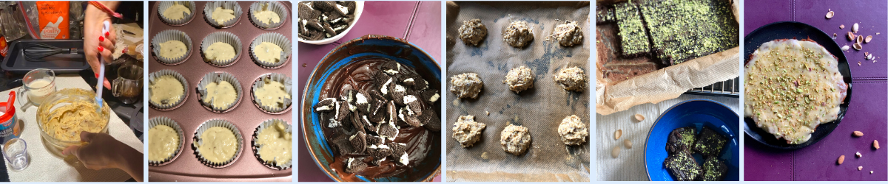
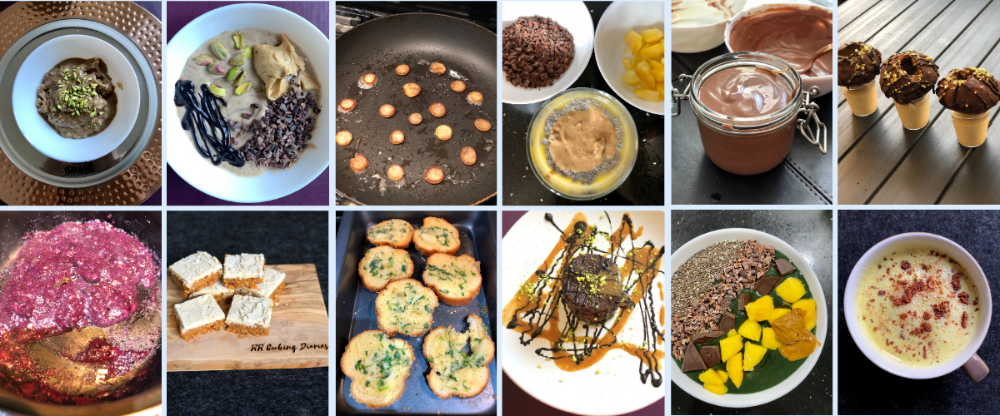

about me
welcome to my culinary diaries
for starters
dishoom dha(r)maka
Before we head to the main event, let's take a quick look at some of the culinary delights I've rustled up to date, courtesy of one of my go-to eateries: Dishoom. A modern day food & hospitality brand behind a series of UK-based Indian restaurants – each inspired by the scores of Parsi cafés that used to decorate the street-corners of 1960s Bombay. While only a handful of its Indian counterparts stand as proud icons of a bygone era, Dishoom is much-loved at eight restaurants (and counting!); complete with a recently refurbished flagship in Covent Garden, London. And continues to draw inspiration from the ethos of Parsi cafés, which (sub)consciously sought to break down barriers and unite all in the name of humanity, no matter the occasion.
Indeed, Dishoom has played host to many of my memories and milestones: breakfasts, graduation dinner, first dates, Raksha Bandhan, Diwali, team Christmas dinner, and casual family catch-ups, to name a few (pictured below). Great food shared with equally great company over hearty laughter truly warms the soul. So, when Dishoom welcomed us further into its world with a cookbook on 5 September 2019, my mum quite aptly gifted a copy on my birthday. And just like that, over a 100 Dish(oom)es were transported from the restaurant's marble tables to my kitchen worktop. Recreated recipes include firm favourites at Dishoom: Gunpowder Potatoes, Okra Fries, Mattar Paneer, Masala (Chocolate) Chai, and Chicken Ruby!


rr cooking Diaries
classic cooks
1. Garlic Butter Herb Roast Chicken via The Forked Spoon • The traditional 'Sunday roast' adopts a butter-garlic-infused flavour profile, and sits atop a bed of rainbow, vitamin-packed vegetables. An ideal blend of indulgence and healthiness!
2. Roast Potatoes • Drenched in garlic and rosemary. Roasted in duck fat. Makes for a moreish accompaniment to any roast
3. Chicken Makhani via 'The Indian Cookery Course' (2016) by Monisha Bharadwaj • A rich, indulgent, and totally treat-worthy mix of butter, tomatoes, spices, and a generous pouring of cream, which pairs beautifully with a side of hot basmati rice and/or garlic naans.
4. Creamy Garlic Penne via Food Dot Com • Carbs are life. And any reason to duly utilise the double cream that typically takes up valuable real estate in my fridge after one use, gets my attention. Adjust the garlic and seasoning to your liking, and you'll find yourself with an easy-to-make weeknight-friendly dinner.
5. Homemade Chicken Curry • A mainstay "curry" in most South Asian households, its base forms a sumptuous melting pot of warming Indian spices. Think laung (clove), dalchini (cardamom), lal mirchi (red chilli powder), and whatever else is to hand.
6. Coriander Chicken Curry via Spice Paw • Handfuls of coriander, heaped tablespoons of plain natural yoghurt, and butter-laden chicken. Serve with protein-packed quinoa to continue the health-conscious move.
7. Spiced Butternut Squash Quinoa via Ishani Vellody Reddy Wellness • Immunity-boosting, nutrient-dense, and full of antioxidants! And tastes great with grilled chicken.
8. Masala Khichidi via Mallika Basu • A comforting (and timeless!) blend of rice and lentils makes for a perfect rainy day meal (and we have plenty of those in London!). Opt for yellow moong daal (lentils) for a healthier, gut-friendly alternative.
9-10. Thaali x2 • These have been a long-awaited cookery dream. And it finally came to fruition last summer, complete with saag paneer, tadka daal, aloo paratha, aam raas, saag aloo, and butter paneer served with a side of salad and raita.
11. Butter Paneer • Transform the humble butter paneer gravy with a sprinkle of kasoori methi (dried fenugreek). Thank me later.
12. Creamy Garlic Mushroom Polenta • Vegan, gluten-free, and really easy to make in under 30 minutes; making it a favourite for weekday dinners. Love!
rr baking diaries
basic bakes
1. Sticky Toffee Pudding via Tibits • A vegan adaptation of a much-loved British dessert, that is - dare I say - even better than it's non-vegan counterpart!
2. Banana Muffins via BBC Good Food • The humble fruit takes centre stage to create a moreish breakfast snack. Up the ante with chocolate chips, or even avocado (it works!).
3. Oreo Brownies via Lorraine Pascale • What do you get with a no-hassle bake using cupboard essentials? A decadent, fudgy treat, enjoyed cold or warmed up and served with a quenelle of (n)icecream.
4. Oat Cookies via Sahil Marwaha • Guilt-free snacking all day, everyday!
5. Dark Chocolate Chia Pistachio Brownies • Woah, that was a mouthful, right? Well, say hi to the rich brownie's health-conscious sister. Packed full of Omega 3, minerals, and vitamins, what's not to love?
6. Carrot Cake with Tart Lemon Frosting and Pistachios via Adeline Waugh of Vibrant & Pure • Can you believe the frosting is made from steamed potatoes, lemon zest, and maple syrup? Vegan alternatives taken to another level, that taste just as good, if not better than typical recipes.
rr making diaries
magic makes
1-2. Peanut Butter x Date (N)icecream • Frozen bananas whizzed with a splash (or two) of non-dairy milk, garnish with your choice of toppings, and you have the best summer time snack!
3. Pancake Cereal • One of TikTok's viral food trends from the past year. Surprisingly packs a sweet punch, so don't be fooled by its tiny form.
4. Mango x Chia Pudding x Cacao Nibs via Foodhall India • Chocolate sundaes, who?
5. Chocolate Mousse via Ayushi Gupta-Mehra of The Foodie Diaries • This recipe calls for dark chocolate, but works just as well with milk chocolate for a sweeter flavour. Note: a shot of espresso is optional!
6. Dark Chocolate Gol Gappa with Pistachio Milkshake • The traditional mouth-watering savoury pani puri makes way for its sweet sibling, thanks to a coat of dark chocolate and accompanied with a shot of pistachio milkshake made from coconut yoghurt.
7. Blueberry chia seed jam via Ishani Vellodi Reddy Wellness • A worthy, Omega 3-packed alternative to sugar-laden supermarket offerings!
8. No-bake Carrot Bites via Copper + Cloves • Healthy dessert or an anytime snack; the bite's in your court.
9. Homemade Garlic Bread • Amp up or down dial the garlic according to your tastes, and pair with a bowl of your favourite pasta!
10. Cacao & Spirulina Pancakes • An interesting and healthy combination that works!
11. Spirulina Smoothie Bowl • As spring fast approaches, swap your warm toast for a soothing bowl of spirulina goodness.
12. Haldi Dood (Turmeric Milk) • An Ayurvedic (ancient Indian science) recipe that boast anti-inflammatory and anti-microbial ingredients, making it great for skin, and bearable thanks to the (manuka) honey.
